5 Seismic Analysis of Single Degree of Freedom Systems
5.1 Preliminary Concepts
In previous chapters we covered most of the required analysis approaches for calculating the response of SDOF systems to various types of excitations including ground motions. Determining a system’s response to base excitation is important for a variety of applications. We mentioned that base excitations in the form of ambient vibrations, human activity such as pedestrian or vehicle traffic, or nearby industrial activity such as construction and mining may induce small-amplitude vibrations that may nevertheless be noticeable and may even be important in housing of sensitive equipment. Yet, many of these activities typically cause insignificant displacements in well-designed structures even if they cause uncomfort to occupants. Conversely, so-called strong ground motion, arising from seismic activity and most significantly in large earthquakes, is so centrally important in structural analysis and design that it merits a dedicated discussion. For this purpose, here we will briefly discuss some fundamental concepts from seismology such as causes of earthquakes and measures of earthquake intensity, followed by a qualitative discussion of factors that may influence structural behavior and possible damage in response to an earthquake. In latter sections response and design spectra for linear systems will be introduced, followed by a discussion of inelastic behavior of structures and its implications for structural design .
5.2 What Is An Earthquake?
The outermost layer of Earth is called the lithosphere. Earth’s thin crust is part of the litosphere and this crust is subject to extreme stresses that arise from the tremendous mass and relative motion of its fragmented sections because the lithosphere is essentially floating on another layer, called the asthenosphere, which is viscous. Each section of the lithosphere that seemingly moves as a single slab is called a tectonic plate or simply a plate, and the scientific theories and studies regarding the motions of these plates constitute the field of plate tectonics. There are 15 tectonic plates identified currently, some of which are called continental plates as they contain the continents, and some called the oceanic plates which spread between continental plates due to driving forces such as the heat from the mantle and magma cooling in the ocean bed. In a simple analogy, the movement of these plates resembles those of frozen sheets of ice on a partially frozen water body, i.e. with the water body representing the asthenosphere, the liquid-like viscous layer of the mantle. The interfaces of plates are called faults; as plates are driven to move, stresses build up along these faults due to constraints that hinder free relative motion, such that deformations occur in the plates. More generally, faults are fracture planes in Earth’s crust; they may be large so as to form interfaces inbetween tectonic plates, or they may be small (its all relative as even small may mean many kilometers long) so as to result from more local rock mass movements. Eventually the stress may exceed the interface resistance causing the plates or rock masses to slide relative to each other, either vertically (dip-slip fault), laterally (strike-slip fault), or some combination of vertical and lateral (oblique-slip fault). With the slip, the deformation energy previously stored in the plate is released by the elastic rebound1 of the plate. Figure 5.1 schematically illustrates the cycle.
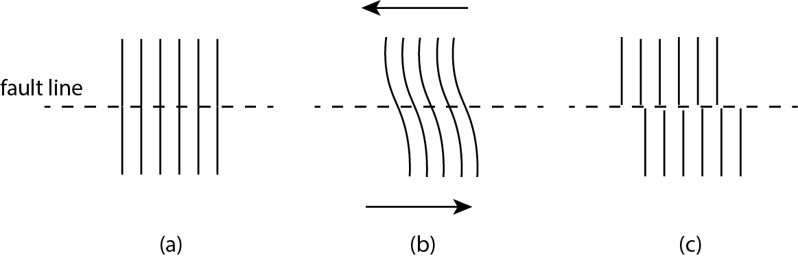
Post-slip elastic rebound causes seismic waves that travel across the lithosphere. These waves include body waves that travel within Earth, comprising longitudinal tension-compression motion (P waves) and shearing motion (S waves), and surface waves that are generated as the body waves emerge on the surface of the crust (Rayleigh and Love waves). These waves cause local lateral and vertical displacements as they pass through a point on the ground. Some of the commonly encountered terms are schematically noted in Figure 5.2.
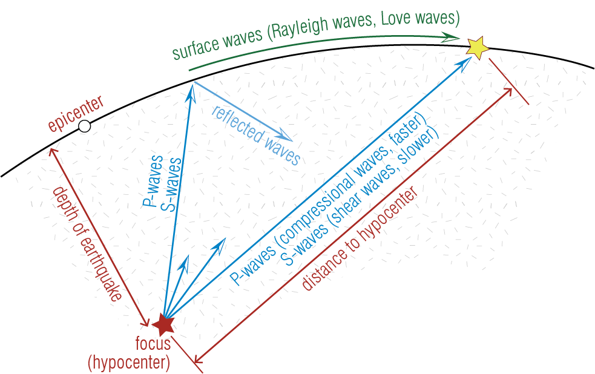
The concept of elastic rebound was established by Harry F. Reid’s seminal report entitled “The Mechanics of the Earthquake, The California Earthquake of April 18, 1906” on the 1906 San Francisco earthquake. The report established substantial elastic bending of the ground through geological surveys that seemed to have occurred in years leading to the earthquake. ↩︎
5.3 Measuring the Magnitude Of An Earthquake
Anecdotal records of earthquakes date back centuries. Systematic quantification of the magnitude and time-history characteristics of earthquakes, however, has become possible only with the advent of seismographic tools. Specifically, accelerometers housed in special stations that are distributed across the world offer us recordings of ground accelerations. Such recordings allow scientists to identify the epicenter as well as the amount of energy released. Figure 5.3 shows actual ground acceleration time histories that were measured during three earthquakes that occurred in a relatively small time span at distinct geographic locations.
Coming up with a single, all-telling indicator to characterize the measure of an earthquake has been an elusive task. Characterizing the behavior of a structure that will be subjected to a future earthquake is all the more so since uncertainties regarding structural behavior compound with uncertainties surrounding what a future ground motion may look like. A general framework proposes that the risk posed to a system is determined jointly by the hazard to which the system will be exposed and the system’s fragility or vulnerability so that: \[ \text{Risk} = \text{Hazard} \times \text{Fragility} \] Ground motion studies try to model and estimate the hazard component while structural engineering studies focus on modeling structural behavior and estimation of fragility. The measure of an earthquake may mean either a quantification of the hazard or a quantification of the risk. For hazard, the measure used may be some magnitude that will try to define how big the energy released during the earthquake is, or some characteristic parameter, like for example the peak ground acceleration, that will try to quantify the amplitude of motion at a specific location. Examining the earthquake records shown in Figure 5.3, we can see that earthquake excitations are generally of random nature without a clear observable pattern. As is characteristic of earthquake ground acceleration time histories, the peak ground acceleration, taken as the maximum value of ground acceleration measured, is different in each case since it depends on distance from the epicenter, magnitude of the earthquake, geological conditions at the site, the response of the structure housing the equipment, instrument characteristics, and other factors. This obviates the well accepted notion that correct interpretation of a seismogram requires us to put the data acquired from a number of seismograms into context through some form of normalization, such that the magnitude of the earthquake can be objectively determined. Additionally, scaling (e.g. to attain a target peak ground acceleration), orientation and other post-processing steps may be necessary prior to utilizing seismogram data for structural analysis purposes.
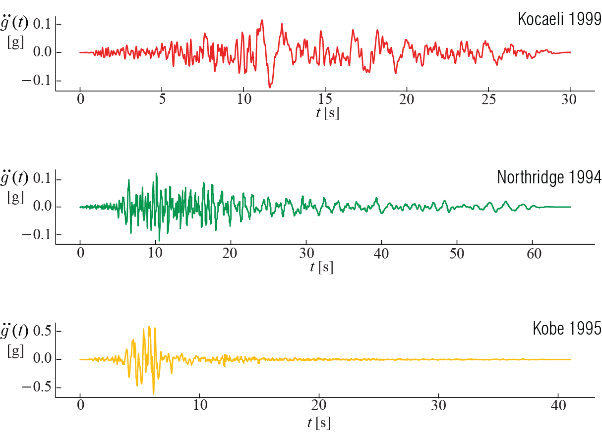
The wide-spread availability of seismographic data allows us to have not just qualitative but also quantitative description of ‘big’ an earthquake is. In general use are two different phrases to describe how big is ‘big’: intensity, and magnitude. Intensity commonly refers to a qualitative measure of the devastation caused in the built environment, and sometimes also in the natural environment, by the earthquake. Such a measure may be helpful for organizing disaster response and for emergency policy-making, among other purposes. The Modified Mercalli Intensity (MMI) Scale2, for example, is an intensity measure widely used around the world. MMI scale, summarized in Table 5.1, ranges from I to XI (roman numerals), with the severity of damage increasing with intensity. MMI estimates may be developed via observation reports and also seismographic measurements such as maximum (peak) ground velocity which have previously been correlated with the MMI scale.
| Intensity | Shaking | Description / Damage |
|---|---|---|
| I | Not felt | Not felt except by a very few under especially favorable conditions. |
| II | Weak | Felt only by a few persons at rest, especially on upper floors of buildings. |
| III | Weak | Felt quite noticeably by persons indoors, especially on upper floors of buildings. Many people do not recognize it as an earthquake. Standing motor cars may rock slightly. Vibrations similar to the passing of a truck. Duration estimated. |
| IV | Light | Felt indoors by many, outdoors by few during the day. At night, some awakened. Dishes, windows, doors disturbed; walls make cracking sound. Sensation like heavy truck striking building. Standing motor cars rocked noticeably. |
| V | Moderate | Felt by nearly everyone; many awakened. Some dishes, windows broken. Unstable objects overturned. Pendulum clocks may stop. |
| VI | Strong | Felt by all, many frightened. Some heavy furniture moved; a few instances of fallen plaster. Damage slight. |
| VII | Very Strong | Damage negligible in buildings of good design and construction; slight to moderate in well-built ordinary structures; considerable damage in poorly built or badly designed structures; some chimneys broken. |
| VIlI | Severe | Damage slight in specially designed structures; considerable damage in ordinary substantial buildings with partial collapse. Damage great in poorly built structures. Fall of chimneys, factory stacks, columns, monuments, walls. Heavy furniture overturned. |
| IX | Violent | Damage considerable in specially designed structures; well-designed frame structures thrown out of plumb. Damage great in substantial buildings, with partial collapse. Buildings shifted off foundations. |
| X | Extreme | Some well-built wooden structures destroyed; most masonry and frame structures destroyed with foundations. Rails bent. |
Magnitude, on the other hand, is a measure of the amplitude of ground motion and energy released in an earthquake, independent of its effects on the environment. In that sense, a magnitude measure may seem more objective than an intensity measure, but in essence they serve different albeit similar purposes. Early efforts to build an objective and quantitative measure for earthquake intensity made use of seismographic data that was becoming widely available. In 1935, Charles F. Richter developed a scale that aimed to account for the size of an earthquake using the peak amplitude measured by a torsional seismometer called the Wood-Anderson seismograph, normalizing this amplitude empirically for the distance from the epicenter to arrive at a local measure of the magnitude. An important notion of the Richter magnitude was that it employed a logarithmic scale to describe the magnitude. The Richter scale, often referred to as the local magnitude (scale) and denoted by \(M_L\), is no longer commonly used today, and it has been replaced by other magnitude measures such as the Moment Magnitude Scale (MMS) \(M_w\) which improves upon the shortcomings of the Richter scale. \(M_w\) is an estimate of energy released during an earthquake based on the estimate of a seismic moment, defined conceptually as the product \(\text{[slip length]} \times \text{[fault area]} \times \text{[rigidity]}\), where rigidity depends on the cohesive strength of the rocks along the faults on which the slip occurs. Just to provide a comparison, the amount of energy released by a \(M_w = 6\) earthquake is comparable to that of an atomic bomb. This measure is also logarithmic, so that an increase from \(M_w = 6\) to \(M_w = 7\) corresponds to a ten fold increase in energy released. Each year, multiple earthquakes of \(M_w > 7\) occur in various locations around the world. Extremely large earthquakes can register \(M_w > 9\), such as the 2011 Tohoku (Japan) earthquake, which triggered a tsunami that compounded the devastation caused by the earthquake. While many of the large earthquakes cause no fatalities as they occur in remote locations, there have been significant earthquakes from the past decade that have caused loss of life measured in tens of thousands and total damage or collapse of thousands of buildings. As such, the issue of seismic design remains as relevant as ever for structural engineering and urban planning, especially for settlements near active faults.
The Modified Mercalli Intensity Scale dates back to the work of Harry Wood and Frank Neumann in 1931 at a time preceding a more clear understanding of the factors that govern the level of destruction dealt by an earthquake and how instrumental measurements could be used to assess this objectively.↩︎
5.4 Architectural Considerations in Earthquake Resistant Design
Many socio-economic considerations, including availability of fresh water and access to fertile lands, have influenced development of civilizations and birth of mega cities that harbor most of the human population in the modern age. Indeed, some of the world’s most populated urban centers are near active faults, and as such, it is not economically viable to avoid seismic hazards altogether by choosing low-hazard regions for further development. A number of considerations in structural design can, however, reduce the risk of structural damage. Many of these design considerations can be explained by intuition without resorting to any structural design calculations. Among the factors governing the demands generated on a structure by an earthquake, site conditions are of paramount importance. Waves travel quicker through dense geomaterials such as hard, unfragmented rock surfaces, which reduces the amplitude of ground motions transferred onto structures. Conversely, softer ground conditions such as soft clay and filled lake or river beds can amplify the amplitude of ground motion by multiple times. Construction in such regions may require implementation of soil improvement techniques, such as drawing piles that extend the foundation to the bedrock. An additional consideration is soil liquefaction, in which the increase in pore water pressure of soils due to excitation may reduce the load bearing capacity, thereby causing buildings to topple over or sink, sometimes even with their foundations intact, into the ground. This may cause damage and collapse even without visible damage to structural elements above surface.
As one may expect from all that we have learned in previous chapters, the natural frequency of the structure as well as available damping will also influence the demands. The fundamental period of a building can roughly be estimated as the number of stories divided by 10. Random vibrations such as earthquakes can be thought as a superposition of many harmonic excitations, where in the particular case of earthquakes the notable contributions to the signals come from excitations in the fraction of one Hz to several Hz range. Stiffness of structural elements is of course critical in determining where the frequency lies relative to this range. Typically, low to mid-rise multi-story buildings are more susceptible to earthquakes, whereas for high-rises the flexible nature of the tall cantilever structure makes the response amplification much smaller, and in such cases lateral wind loads are often the dominant design consideration for determining member sections.
Construction and materials quality are additional factors that determine structural response outcomes, and we cannot overemphasize the importance of quality control and site inspections for ensuring good seismic performance of well-designed structures. In most structures, the cost of the structural elements is a much smaller fraction of the total cost of the building, and from an engineering standpoint it is sensible to invest in high structural performance over superfluities that are largely cosmetic.
A number of design factors also contribute to the structural response. Symmetrical plans and continuous load transfer mechanisms, especially along vertical axes, are known to be beneficial or at least nondetrimental is seismic behavior. Typically, basic structural designs utilize moment resisting frames, diagonal braces, or shear walls to limit lateral drift due to earthquake loads. Codes typically limit drift to \(1\%\) of building height to avoid excess damage. Seismic resisting elements placed at the perimeter help limit drift and also maximize torsional resistance of these structures. Uniformity of load bearing elements is important: designs should avoid short column effects that will concentrate stresses on particular load-bearing elements, or soft stories that often arise when fewer columns are used in entrance floors to generate commercial or parking spaces but are susceptible to formation of collapse mechanisms. Additionally, simple design considerations, such as low height to base ratios (to avoid overturn), equal floor heights or stiffness distributions, short spans, diaphragms without large openings, and avoiding cantilevers are preferable. Aseismic design guidelines are well-described in building codes and documents such as FEMA 4543 which offer guidance for seismic considerations in architectural design. Structures conforming with these design guidelines are considered to be regular structures, for which analysis procedures may be considerably simpler. That said, irregularities may need to be present for architectural or other purposes and are permissible within the guidelines of building codes (e.g. ASCE 74 in the US) that delineate conditions that must be satisfied for these structures to be code-compliant. While these aspects are worthy of mentioning to promote awareness, in depth discussion of such practical considerations is beyond our scope and can be found in building codes and references focusing on structural design.
5.5 Earthquake Response Spectra for Linear Systems
Let’s recall that the equation of motion for a viscously damped linear SDOF system subject to ground accelerations \(\gacc (t)\) is given by \[ m \ddgc (t) + c \dgc (t) + k \gc (t) = - m \gacc (t) \] which may also be expressed as \[ \ddgc (t) + 2 \damp \freq \dgc (t) + \freq^2 \gc (t) = -\gacc (t) \] whereby it is quite obvious that the mass of the SDOF system does not explicitly factor into the equation in the case of ground motion, although it influences system parameters such as its natural period. In the context of seismic design, our primary goal is to determine the peak value of a key response variable, for example the relative displacement of the mass with respect to the ground, given a particular ground acceleration time history \(\gacct\). These calculations will almost always have to be done via numerical methods.
The equation of motion implies that the response to a specific ground motion depends only on the natural frequency (or period) and the damping ratio of the system. How a response quantity varies with the period of the system is a very important design consideration, and the concept of a response spectrum was previously introduced in our discussion of forced vibrations of SDOF systems precisely for this reason. In the particular case of earthquake response spectra, we compute the peak response quantity (for example the absolute maximum value of \(\gc (t)\)) attained due to a particular ground acceleration time history \(\gacc (t)\), and plot it against the period of the structure. Given an earthquake ground acceleration record, the response spectrum tells us what peak values may be expected depending on the period \(\period\) of the system. Often the same plot may include multiple graphs, each corresponding to a different value of the damping ratio. Of particular interest is the displacement (deformation) response spectrum, where we can define the absolute maximum of the displacement as:
\[
\dspec = \dspec(\period, \damp) \equiv \max_t \left( {q(t,\period,\damp)} \right )
\] Figure 5.4 illustrates how the displacement response spectrum of SDOF systems vary with their undamped period \(\period\) in response to the Kobe and Northridge records shown in Figure 5.3. The spectra are developed for a damping ratio of \(\damp = 5\%\) using the central difference algorithm.
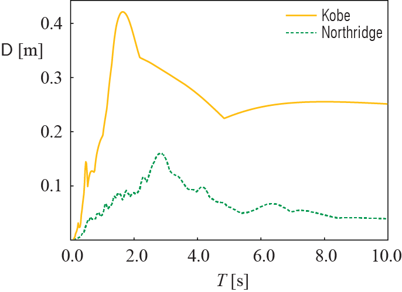
The two ground motion records are quite different (see Figure 5.3) and so are their response spectra; there are, however, some common behavioral observations. When the period is very small (as \(\period \rightarrow 0\)), the deformation is negligible, as this limit represents an extremely rigid structure that moves as a rigid body with the ground. At the other extreme (as \(\period \rightarrow \infty\)) , each spectra seems to converge to some constant value, as this limit represents an extremely flexible structure in which the mass basically stands still as the ground moves, with the maximum deformation given by the peak ground displacement (of that particular ground motion). The mid-period range is where obvious differentiation between the ground motions appear and this region is where most civil engineering structures are located.
One could similarly compute the absolute maximum values of the relative velocity and absolut (total) acceleration responses. Plotting these computed values against the natural period of the SDOF system can be used to construct the relative velocity response spectrum and the acceleration response spectrum. These two spectra are seldom computed. Instead, it is more practical to compute the so-called pseudo-velocity, defined as \[ \vspec = \freq \dspec = \frac{2 \pi}{\period} \dspec \qquad(5.1)\] and the pseudo-acceleration, defined as \[ \aspec = \freq^2 \dspec = \left(\frac{2 \pi}{\period}\right)^2 \dspec \qquad(5.2)\] whic are very close, but not exactly equal in the presence of damping, to the peak relative velocity and the peak absolute acceleration, respectively.
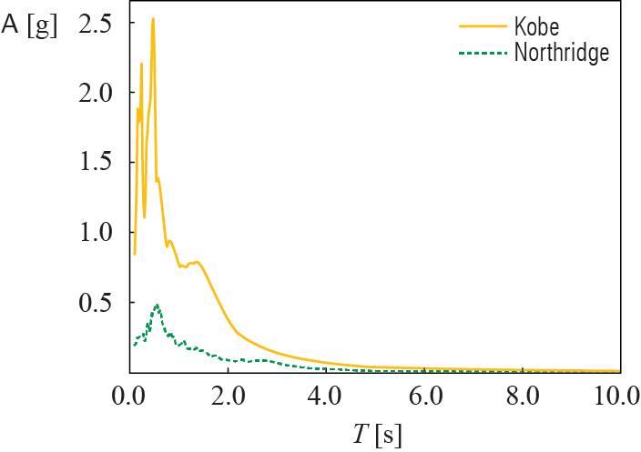
Figure 5.5 shows the pseudo-acceleration response spectra derived from the displacement response spectra shown in Figure 5.4. Again, the two spectra are significantly different, each reflecting the nature of its corresponding ground motion, albeit with some common behavioral patterns. Each spectra starts (as \(\period \rightarrow 0\)) from the peak ground acceleration of its ground motion, as this limit represents a completely rigid structure with the mass moving identically with the ground. At the other extreme (as \(\period \rightarrow \infty\)), both spectra asymptotically converge to zero, as this limit represents an extremely flexible structure with the mass standing still as the ground moves. Once again the mid-period range reflects the particular energy contents of the individual ground motions, with high amplifications for some values of the period and not so significant amplifications in others. The response spectra essentially represent the demand on a structure: the bigger the response spectra, the more deformation the structure will have to resist.
We may naturally inquire how the pseudo-acceleration relates to the absolute (total) acceleration. In the case of undamped SDOF systems, the two quantities are identical. We can see this by writing the equation of motion as \[ m \aacc (t) + k \gct = 0 \] and thus \[ \aacc (t) =- \freq^2 \gct \qquad(5.3)\] where we note that \(\aacc (t)\) is teh absolute (total) acceleration given by \(\aacc (t) = \gacct + \ddgct\). From Equation 5.3 it is clear that the total acceleration scales proportionally with relative displacement \(\gc (t)\), with the proportionality constant being \(\freq^2\). This approximation is not strictly true for damped systems since with the inclusion of the damping term, acceleration is \[ \aacc (t) =-(2\damp \freq \dgct + \freq^2 \gct) \] However, the maximum of the relative displacement (deformation) occurs when the relative velocity is zero, and the acceleration at that instance, while not exactly equal to its peak value, is given by \(-\freq^2 D\). This value is a close approximation for lightly damped systems. The error of this approximation will grow with the damping ratio but for common structures with \(\damp < 0.1\) it is inconsequential, justifying the use of Equation 5.2.
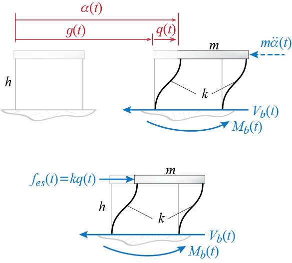
The utility of calculating the pseudo-acceleration becomes apparent when we think about what will be the peak demand from our SDOF system due to the ground excitation. For SDOF systems, two of the significant measures of demand are the base shear and overturning moment: these quantities have direct implications on demands regarding shear forces, bending moments and axial forces that must be transmitted by the vertical members right above the ground. A popular conceptualization that bears some familiarity to the models the structural engineers are accustomed to is to think about a set of external forces that would, if they were to be applied to a stationary stucture, generate the same deformations as those that would be induced by the ground motion. These hypothetical forces are called equivalent static forces, to be denoted by \(\estat (t)\) in SDOF systems. Obviously if the deformation (relative displacement) in an SDOF system at any instant is \(\gc\), the external force that would have to be applied to that system to generate the same deformation without motion would have to be \(\estat = k \gc\). Since the internal forces developed in members depend on the deformations, the equivalent static forces may be used to calculate the internal forces that must be transmitted by the load bearing members using static equilibrium concepts. The equivalent static forces, although hypothetical, are of course related to the inertial effects through the equation of motion. Consider the SDOF force diagram shown in Figure 5.6. Using d’Alembert forces, we may consider static force and moment equilibrium of the whole system and calculate the base shear and overturning moment as: \[ \baseshear (t) = - m \ddgc (t), \quad \overturn (t) = - h m \ddgc (t) \qquad(5.4)\] The equivalent static force concept says that we may use the lateral static force (applied in concordance with the sense of the generalized coordinate) \(\estat (t) = k \gc (t)\), in which case we would have \[ \baseshear (t) = k \gc (t), \quad \overturn (t) = h k \gc (t) \qquad(5.5)\] That these are both viable approaches (the d’Alembert forces are in fact exact) for calculations may be deduced from the equation of motion of an undamped system since then we would have \[ m \aacc (t) + k \gc (t) = 0 \quad \rightarrow \quad - m \aacc (t) = k \gc (t) = \estat (t) \] so that if damping were neglected, Equation 5.5 and Equation 5.5 would yield identical results. With damping there will be differences but such differences could very well be neglected for lightly damped systems. The peak values for base shear and overturning moment may therefore be calculated via \[ \baseshear = k \dspec = m \aspec \qquad(5.6)\] and \[ \overturn = h k \dspec = h m \aspec \qquad(5.7)\]
When expressed in units of gravitational constant \(\gravity\), the pseudo-acceleration \(\aspec\) directly specifies the magnitude of peak base shear as a ratio to the weight (\(W = m\gravity\)) of the SDOF system; e.g. when \(\aspec = 0.7\gravity\), then the peak shear is \(\baseshear = 0.7 m \gravity = 0.7 W\) or, in other words, \(70 \%\) of the structural weight.
5.6 Characteristics of Response Spectra
From Equation 5.1 and Equation 5.2 we note that the response quantities \(\dspec, \vspec, \aspec\) are all interrelated through the equation \[ \frac{\aspec}{\freq} = \vspec = \freq \dspec \] which, when expressed in terms of the period instead of the frequency, become \[ \frac{T }{2 \pi} \aspec = V = \frac{2 \pi}{T} D \]
Logarithms (say to base 10) of these relations lead to \[ \log \vspec = - \log \period + \log \dspec + \log 2\pi \] \[ \log \vspec = + \log \period + \log \aspec - \log 2\pi \] so that if \(\log \vspec\) were to be plotted against \(\log \period\), \(\log \dspec = \text{constant}\) would be a line parallel to the \(- 45^\circ\) line (in other words, parallel to the line \(\log \vspec = - \log \period\)), and \(\log \aspec = \text{constant}\) would be a line parallel to the \(+ 45^\circ\) line (i.e. parallel to the line \(\log \vspec = + \log \period\)). Therefore, if plotted on the same logarithmic figure with the vertical axis corresponding to \(\vspec\), \(\dspec\) axis would have a slope of \(+1\) and \(\aspec\) axis would have a slope of \(-1\). Thus, the three spectral response parameters \(\dspec\), \(\vspec\), and \(\aspec\) may be shown on a single tripartate logarithmic graph as plotted in Figure 5.7. Such tripartate plots have historically helped identify certain trends in earthquake response spectra which in turn have been employed in development of design spectra.
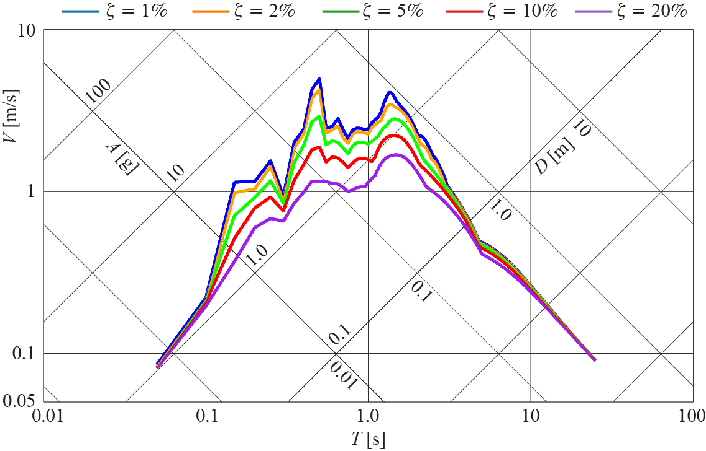
There are two extremes in such spectra which happen to yield identical behaviors across all earthquake ground motions: lines for different \(\damp\) converge to the same limits asymptotically at the low and high ends of the spectra. These two extremes may be explained by mechanical considerations. When the period is very low (\(\period \rightarrow 0\)), the stiffness of the system should be extremely large (assuming a proportinately finite mass). In the limit, if the structure were to be infinitely stiff (\(k \rightarrow \infty\)), then we would have \[ \frac{m}{k} \aacc (t) + \gc (t) = 0 \approx \gc(t) \] so that with no relative displacements, the mass would move identically as the ground. Hence the maximum absolute acceleration of the mass would be identical to the peak ground acceleration so that \[ \text{as } \period \rightarrow 0, \quad \dspec \rightarrow 0 \text{ and } \aspec \rightarrow \text{peak ground acceleration} \] At the other extreme when \(\period \rightarrow \infty\), the system has negligibly small stiffness (\(k \rightarrow 0\)) so that almost no force is transmitted to the mass. The mass therefore stands still as the ground moves, with \[ m \aacc (t) + k \gc (t) = 0 \approx m \aacc \rightarrow \ddgc (t) \approx - \gacc (t), \quad \gc (t) \approx - \gdis (t) \] and we have \[ \text{as } \period \rightarrow \infty, \quad \dspec \rightarrow \text{peak ground displacement} \text{ and } \aspec \rightarrow 0 \] Note that these trends are clearly independent of the ground motion as they are rather solely dominated by the physical properties of the system. The mid-range of the periods meanwhile illustrate the regime in which damping plays a pivotal role in the dynamic amplification observed. The behavior in this region is generally idealized as variations around a constant velocity value.
5.7 Elastic Design Spectra
It will be of interest to plot variations in the pseudo-acceleration response spectrum for different values of \(\damp\) for a given ground motion time-history. This is shown in Figure 5.8 for the Kobe ground motion record of Figure 5.3. It is clear yet again that damping plays an important role for SDOF systems in the mid-period range. While the excitation time history would cause notable differences in the spectra, some generic observations can be made.
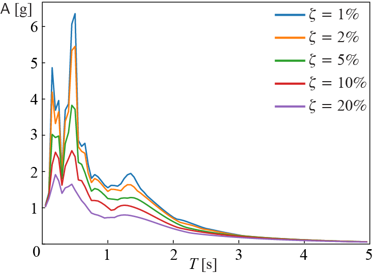
For \(\period\) values that are very small, \(\aspec\) converges to the peak ground acceleration. As the period gets longer, \(\aspec\) exhibits a sharp increase with increasing \(\period\). This increase can be assumed to be more or less linear. At intermediate values of \(\period\), \(\aspec\) shows large fluctuations in lightly damped systems. A plateau-like behavior can be seen as damping increases. Highest sensitivity to the damping ratio is observed in this intermediate regime. For design purposes, we may consider \(\aspec\) to be roughly constant over a narrow range of \(\period\) values beyond the initial linear increase regime, before transitioning to a decay regime. The value of \(\aspec\) strongly depends on \(\damp\) in this intermediate range. Beyond this point, \(\aspec\) exhibits a roughly inverse \(1/\period\) relation with the \(\period\) and possibly transitions to a \(1/\period^2\) scaling at very long periods.
In summary, three distinct regions possibly arise in an idealized spectrum. The spectrum starts from the PGA value and linearly rises in the acceleration governed, small period regime. In the narrow velocity governed regime, \(\aspec\) fluctuates around an average value, possibly with sharp peak and troughs. At longer periods, \(\aspec\) decays inversely with the period and the response is governed by a large relative displacement. These basic features form the basis of linear elastic design spectra used in structural design codes such as ASCE/SEI 7: “Minimum Design Loads and Associated Criteria for Buildings and Other Structures”. The parameters describing the curve, most notably the two periods that mark the transition points in the so-called traditional 2-period response spectra (2PRS), are determined based on the local regulations that take into account the expected magnitude of the earthquake and ground conditions, considering an ideal maximum credible earthquake (MCE, e.g. an earthquake with ~2,500 yr return period). Various tools (such as the “ASCE Hazard Tool”) can be used to obtain design spectra for specific site conditions. It should be noted that with ASCE 7-22 and subsequent versions, the design guidelines have shifted from the traditional two-period response spectra (2PRS) to multi-period response spectra (MPRS) that better captures the frequency characteristics of earthquakes5. Notable differences between 2PRS and MPRS spectra are the sharper peak and transition in the velocity governed regime and a more gradual decay in the long-period regime. Figure 5.9 demonstrates the ASCE 7-22 prescribed response and design spectra (defined as the 2/3 of the intensity of the response spectrum to MCE) for a site on stiff soil and ordinary building (Risk Level II) in Evanston, IL, USA.
The discussion of practical considerations in constructing and using response and design spectra are purposefully kept brief here not to detract from the fundamental concepts pertaining to structural dynamics. Developing understanding of seismic hazards results in continuous changes in design codes and regulations, as such, these discussions are meant to familiarize the reader with general considerations rather than intending to convey the most up to date and accurate practices. For a more in depth discussion of response and design spectra, as well as their historical development, we refern the reader to comprehensive references on structural dynamics and seismic design6.
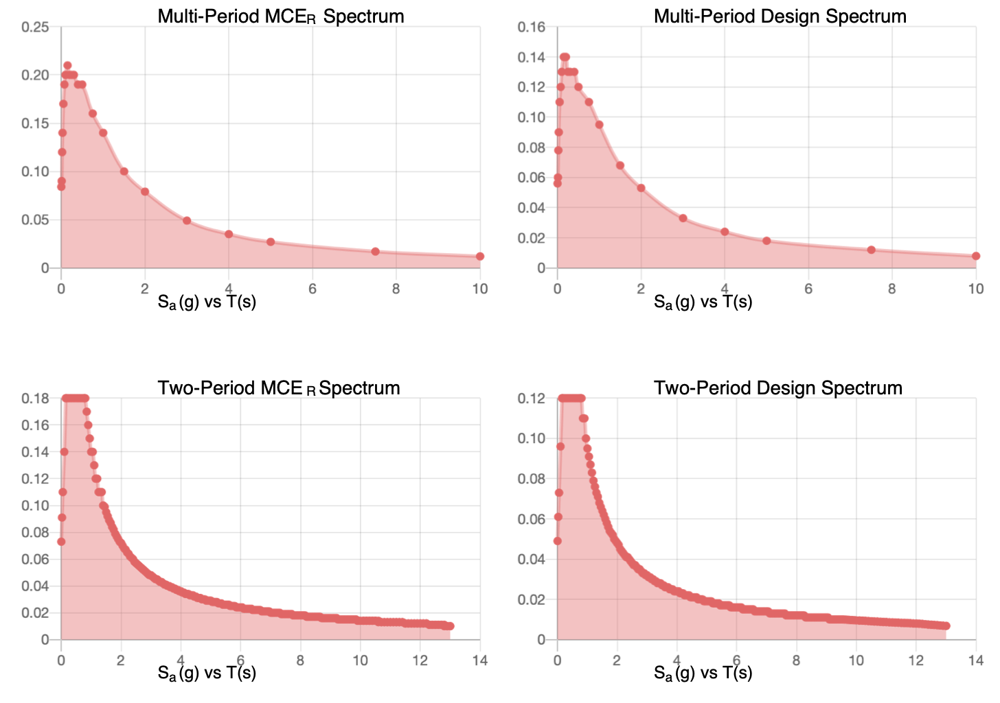
EXAMPLE 5 .1
Based on the response spectra shown in Figure 5.8 scaled down to a PGA of \(0.5 \gravity\), calculate the peak base shear and overturning moment for an SDOF idealization of a one-story building with floor mass \(m = 250 \, 000~\unit{kg}\), floor height \(h = 3~\unit{m}\), total lateral stiffness \(k= 10 \, 000\unit{kN}\), and \(\zeta = 0.05\). Express the base shear and overturning moment in terms of the weight of the structure.
We first compute natural frequency and period of system as \(\freq = \sqrt \frac {k}{m} =\) 6.32 rad/s. This gives \[\period = \frac{2 \pi} { \freq} = 0.993~\unit{s} .\]
We can estimate \(\aspec\) from the graph as \[\aspec \approx 1.2\times0.5 = 0.6 \gravity \]
noting that the acceleration must be scaled down by 50%. Then, the base shear is calculated as a function of the weight \(W=m\gravity\):
\[ \baseshear = mA = 0.6 m\gravity = 0.6 W\]
Similarly,
\[\overturn = mAh = 1.8 W\]
5.8 Earthquake Response Spectra for Non-linear Systems
The elastic response and design spectra are helpful in understanding the response of a building to strong ground motion, particularly the effects of viscous damping and the natural period on response characteristics. The current paradigm in earthquake engineering, however, is based on the premise that it is not feasible economically to design buildings in a way to ensure that they respond elastically in rare large earthquakes. It is expected and deemed acceptable to some degree that a building shall respond inelastically to a significant ground motion; that cracking of concrete, yielding and plastic deformation of reinforcing bars or moment resisting steel frames shall occur. These material nonlinearities conribute to energy dissipation capacity of the structure. Additionally, when displacements become large, geometric nonlinearities may also become significant; for instance, brace members or suspension cables may exhibit large deviations from their undeformed orientations, which in turn may necessitate use of nonlinear trigonometric relations to model the stiffness term in the SDOF equation of motion.
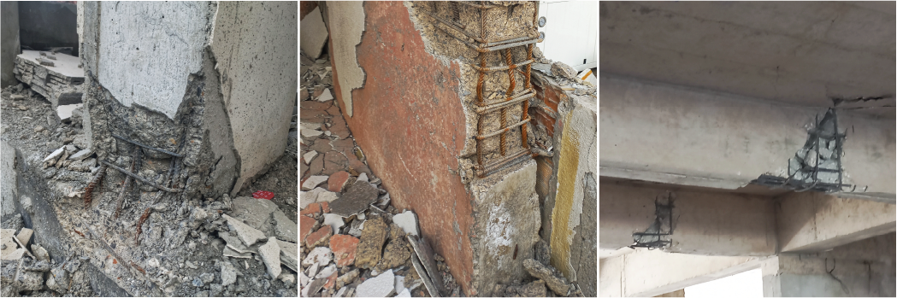
Inelastic behavior is difficult to quantify and predict exactly, but safety may be approximately accounted for by estimating how much ductility structural members can exhibit without losing load-bearing capacity, and how that capacity would fare against the total elastic and plastic deformations that a structure would have to sustain during an earthquake, i.e. demand. High inelastic demands may lead to excessive damage on load bearing members, a few examples of which are shown in Figure 5.10; significant demands may lead to collapse of structures during earthquakes or the structure may need to be demolished after the earthquake due to irreperable damage. In this section we will try to examine the effects of plastic deformations on the response time histories and consequently the peak response spectrum variables \(\dspec\),\(\vspec\) and \(\aspec\).
5.8.1 Strength Reduction and Ductility
The elastoplastic (elastic-perfectly plastic) spring model was previously introduced in the context of non-linear numerical integration methods, where it was also illustrated how energy is dissipated via plastic deformation in the form of hysteresis during cyclic excitation. We once again adopt the simple elastoplastic spring model to account for post-elastic deformations, this time in the context of earthquake induced ground motions. With no claims to exactness, the elastoplastic (elastic-perfectly plastic) model leads to some observations which help understanding of response behavior in more complicated nonlinear force-deformation relationships in which stiffness is continuously modified throughout the analysis to simulate plastic deformations that could occur due to large displacements.
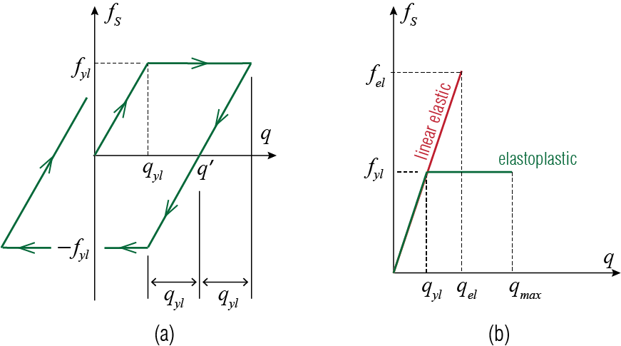
Recall that in the first loading (\(\diff \gc \geq 0\) throughout) of an initially unloaded and undeformed elastoplastic spring, the force-displacement (\(\stifforce\)-\(\gc\)) relationship is defined as: \[ \stifforce = \begin{cases} k \gc & \text{if $\gc < \yielddisp$}.\\ \yieldforce & \text{if $\gc \ge \yielddisp$}. \end{cases} \qquad(5.8)\] Yielding begins when \(\gc = \yielddisp\), i.e. the yield displacement, and the corresponding spring force \(\yieldforce\) is called the yield force. When defining such a spring one also needs to prescribe unloading and reloading roles, for which it is assumed yielding in tension and compression occur at the same deformation level (\(\gc' \pm \yielddisp\) where \(\gc'\) is some value of \(\gc\) for which \(\stifforce = 0\)), and all unloading and reloading lines are parallel to the initial loading line. These rules are graphically summarized in Figure 5.11 (a).
It has become customary in earthquake engineering to define a hypothetical conjugate linear SDOF system (also referred to as the corresponding linear system) for comparison purposes. The conjugate linear SDOF system is a system with the same mass and the same initial tangent stiffness as the inelastic system, and it is assumed that the conjugate system remains linear elastic with this stiffness value. If the conjugate linear SDOF system has a stiffness of \(k\) and its maximum deformation under an excitation is \(\dspec = \maxlindisp\), then the peak force transmitted by the spring of the conjugate system is \(\maxstifforce = k \maxlindisp\). The comparative behavior of an elastoplastic system and its conjugate linear SDOF system are sketched in Figure 5.11 (b). By definition, the force in the elastoplastic spring can not exceed the yield force so that if \(\maxlindisp > \yielddisp\), then \(\maxstifforce > \yieldforce\). One measure of inelastic action is the strength reduction factor \(\redfac\) (also reffered to as the yield strength reduction factor), defined as \[ \redfac= \frac{\maxstifforce}{\yieldforce} = \frac{\maxlindisp}{\yielddisp} \geq 1 \] The strength reduction factor is significant because in some sense it provides a bound for force-based design: if the system is allowed to deform inelastically, then the force it will have to be designed for is less than the force it would have to resist if it were to remain elastic. This sounds too good to be true and it is: plastic deformations may not be allowed to reach excessive levels and, even more importantly, the system must be designed sufficiently well so as to be able to undergo expected plastic deformations without any failure (however one may define failure). So the strength reduction factor by itself does not suffice to ensure successful aseismic design. Another commonly used measure in earthquake engineering is the ductility demand \(\duct\) (also referred to as the ductility factor) defined as \[ \duct = \frac{\maxtotdisp}{\yielddisp} \] where \(\maxtotdisp\) is the maximum (in an absolute value sense) deformation that occurs in the system under a particular excitation. The ductility demand helps to quantify the amount of plastic deformation that will be asked of a system designed with some value of \(\redfac\) in mind. For a certain value of \(\redfac\), the response of the inelastic SDOF model may be computed numerically to estimate the maximum deformation \(\maxtotdisp\) with which the ductility demand may be forecast.
In the context of damped SDOF systems with damping ratio \(\damp\), several important questions arise. First, what is the relationship between \(\redfac\), \(\mu\), and \(\period\), and to a lesser extent \(\damp\)? Qualitatively, one can expect that higher values of \(\redfac\) will result in greater ductility demands, but how does this depend on system variables? Another important question is: how should an inelastic response spectra be constructed to understand the impact of ductility demand on key response variables, and what are the appropriate variables to ensure a rational comparison with elastic systems? This will allow us to contrast strength-based designs (elastic design) and ductility-based designs (inelastic design) to see how they fare against each other from an economical or structural performance standpoint.
5.8.2 Inelastic Response Spectra
Analyses by Veletsos and Newmark7 using the El Centro and Vernon earthquake records in the early 1960s helped clarify how elastic and inelastic behavior can be contrasted. To examine various issues, we’ll calculate the response of inelastic systems subjected to an actual ground motion (in our case the Kobe ’95 record) using the central difference algorithm. The first question that arises is, can inelastic deformations dissipate sufficient energy to reduce the maximum displacement attained to be below that of the conjugate linear system. Figure 5.12 illustrates that for lightly damped systems, this appears to be the case over a wide range of intermediate periods.
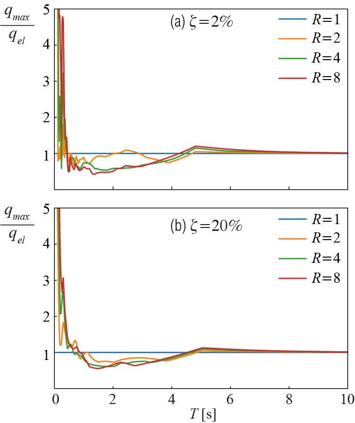
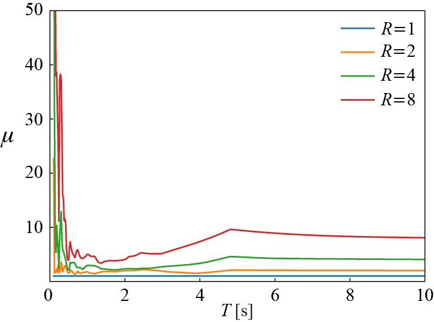
For fairly rigid systems with small periods, on the other hand, plastic deformations become quite excessive, often exhibiting a multi-fold increase relative to linear responses. In this regime, the large ductility demands shown in Figure 5.13 impose some practical limitations on the utility of inelastic behavior. Thus, for structural systems that are fairly rigid and with periods lower than \(1 \unit{second}\), the design tends to rely predominantly on strength to ensure that the response remains largely elastic. Inelastic deformations seem to contribute to keeping the peak displacements relatively small in the intermediate period range even for increasing values of viscous damping. Whereas for long-period structures, benefits of hysteretic damping seem marginal, in a sense similar to the case of viscous damping. In this long-period regime, as previously discussed in the context of elastic spectra, a system with a finite mass is relatively so very flexible that the mass basicaly stands still as the ground moves; hence one essentially has \(\maxlindisp \approx \maxtotdisp \approx \text{peak ground displacement}\). This convergence also implies that for long-period systems one has \(\redfac \approx \duct\) since for \(\maxlindisp = \maxtotdisp\), \[ \redfac = \frac{\maxstifforce}{\yieldforce} = \frac{k \maxlindisp}{k \yielddisp} = \frac{\maxtotdisp}{\yielddisp} = \duct \] and not surprisingly we see that the ductility curves in Figure 5.13 tend to their respective strength reduction factors toward the higher values of the period. The observation that for longer periods \(\maxlindisp \approx \maxtotdisp\) (and, equivalently, \(\redfac \approx \duct\)) is called the equal displacement rule and it has been used as a basis for many code provisions.
To delve deeper in to these comparisons, it will be fruitful to think about how response spectra may be constructed to allow for direct comparison between inelastic and elastic systems. For this purpose, we consider that the maximum elastic strain energy that can be stored in the inelastic system is given by \[ \frac{1}{2} k \yielddisp ^2 = \frac{1}{2} m (\freq \yielddisp)^2=\frac{1}{2} m \yvspec^2 \] where the pseudo-velocity spectral response variable is defined as \(\yvspec \equiv \freq \yielddisp\). This notation is consistent with elastic pseudo-velocity and pseudo-acceleration definitions presented earlier, since for \(\redfac=1\) corresponding to the elastic case we have \[ \dspec = \maxtotdisp = \yielddisp \] Similarly, the pseudo-acceleration spectral response and yield-deformation spectral response variables can be defined in accordance with linear systems, which results in the following relationships: \[ \frac{\yaspec}{\freq} = \yvspec = \freq \ydspec \qquad(5.9)\]
As in the case of linear systems, \(\yaspec\) is significant from a design standpoint because it is related to the maximum base shear and overturning moment that can be attained, i.e. \(\baseshear = m \yaspec\) since the maximum member force is capped at the yield strength. It is of practical utility to construct a constant ductility response spectrum for the variables shown in Equation 5.9 to understand how ductility demand will impact these response measures. Such a development, however, requires iterative determination of the relationship between \(\yieldforce\) and \(\mu\). This can be done by numerically computing the ductility demand and then determining the largest value of the \(\yieldforce\) that results in a target \(\mu\), within an acceptable threshold. Interpolation of \(\yieldforce\) and \(\mu\) relationships computed with a small number of points may also be used to more efficiently converge to the ductility solutions. Figure 5.14 demonstrates the relationship between \(\redfac\) and \(\mu\). From Figure 5.14, it is apparent that as \(\period \rightarrow 0\), \(\redfac \approx 1\). In the limit as \(\period \rightarrow \infty\) period limit, \(\redfac \approx \mu\). It has also been empirically suggested that \(\redfac \approx \sqrt{2 \mu - 1}\) in the intermediate range, although various analytical formulas could be fitted to this regime. These basic rules of thumb, along with linear interpolation of \(\redfac\) between these constant \(\redfac\) regimes can be used to determine design values for yield-strength reduction factors empirically based on ensembles of ground motion data to construct inelastic design spectra.
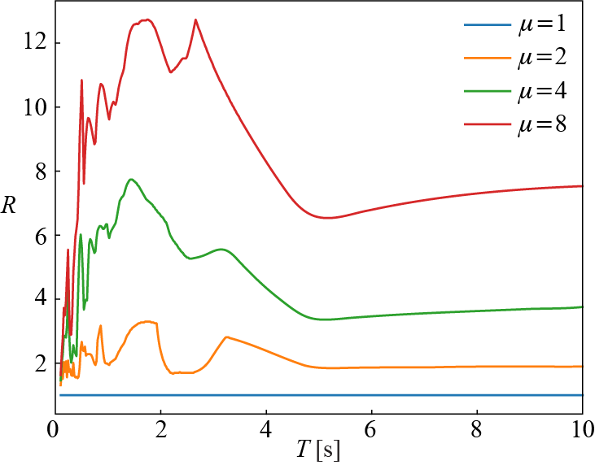
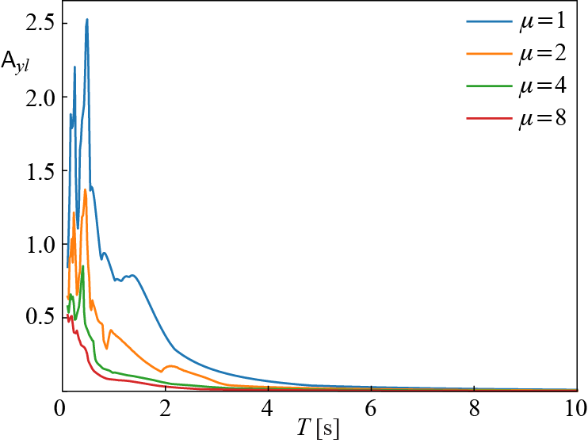
Figure 5.15 illustrates the variation of \(\yaspec\) with \(\period\). Comparing Figure 5.8 with this spectra while being mindful of the scaling difference due to different PGAs, it is evident that the role of inelastic deformation is similar to damping, with a moderate amount of ductility strongly reducing the amount of strain energy that must be accommodated elastically in the system during deformations. As in the case of viscous damping, inelastic dissipation is most effective in the intermediate range of periods, which is the velocity sensitive regime. For the pseudo-acceleration spectra, it is clear that allowing a ductility factor of \(\mu = 2\) is equivalent to having a linear system with fairly high levels of damping (~10%) in the velocity-sensitive regime. Considering that most structural engineering materials and member designs can accommodate reasonable amounts of ductility in the range of \(\mu \approx 3\), and that externally supplementing viscous damping is relatively costly, ductile designs offer economical alternatives to purely strength-based designs that enforce strictly linear behavior.
Based on these considerations, we can summarize the seismic design process as follows. The designer may choose to pursue a strength-based design approach, ensuring that the response remains elastic at all times. This may be an economical solution in fairly rigid, short period structures in which high ductility demands may result in displacements that exceed safety limits even with a relatively small \(\redfac\). For intermediate to longer period structures, accounting for some degree of inelastic deformation will often yield more economical solutions.8 This can be pursued by choosing a reasonable \(\redfac\) and determining what is an acceptable ductility demand, for instance using the approximate \(\redfac - \mu\) relationships listed above for different period ranges. In building codes, the reduction factor is generalized to account for not only the yield behavior but also the overstrength that a structure should have, which is the difference between the design strength and the true yield strength that exceeds that value. All the relevant parameters such as the maximum deformation of an inelastic system can be determined directly from an elastic response spectrum. For instance, in the case of an allowable stress design approach, assume that the designer needs to determine \(\yieldforce\). Based on the type of the structure and materials used, building codes typically prescribe an allowable ductility factor \(\mu\). Based on a linear elastic design spectrum, \(\aspec\) can be determined for a given \(\damp\) and \(\period\). Then, approximations for \(\redfac\) based on \(\mu\) can be determined for the given \(\period\) using the established empirical relationships (recall trends in Figure 5.14). From there it follows that \(\baseshear = m \aspec/\redfac = \yieldforce\). Additionally, one may need to consider the maximum displacement attained to ensure that it is within allowable limits. Recall that \[ \mu = \frac{\maxtotdisp}{\yielddisp} = \frac{\maxtotdisp \redfac}{ \dspec} \qquad(5.10)\] where \(\dspec\) is the maximum displacement attained in the conjugate linear system, and thus \(\yielddisp = \dspec/R\). Noting that for the conjugate linear system, \[\aspec = \left(\frac{2 \pi}{\period}\right)^2 \dspec \qquad(5.11)\] we can use Equation 5.11 in Equation 5.10 to obtain: \[ \maxtotdisp = \mu \frac{1}{R} \left(\frac{T}{2 \pi}\right)^2 \aspec \qquad(5.12)\]
A.S. Veletsos and N.M. Newmark, Effect of Inelastic Behavior on the Response of Simple Systems to Earthquake Motions, Proc. of 2nd WCEE, pp. 895-912, 1960.↩︎
We have to be careful about what we mean by “economical” as the validity of the adjective depends very much on the boundaries or horizon of analyses. Recent earthquakes have unfortunately shown that indirect losses, such as significant population migration away from heavily damaged quarters and the consequent socio-economic losses may better be avoided even at higher costs of initial construction. “Resilient Urban Environment” may become the dominant paradigm in recent future.↩︎
5.9 Wrapping Up
In this chapter, we tried to introduce the basic concepts and analyses techniques developed for understanding how SDOF systems respond to base excitations, most notably in earthquakes. For linear systems designed for substantial strength, construction of elastic response spectra is relatively straightforward and can be done using existing ground acceleration time-histories. Appropriate care must be taken to ensure that time-histories, notably frequency range of the excitations, and peak amplitude of ground accelerations taken are representative of the site conditions and historical characteristics of earthquakes in the region. Principles underlying simplified design spectra commonly employed in building codes were briefly mentioned. We also introduced concepts of inelastic response spectra and design considerations, namely the importance of ductility in dissipating energy and economical designs that arise when ductility is favored over strength.